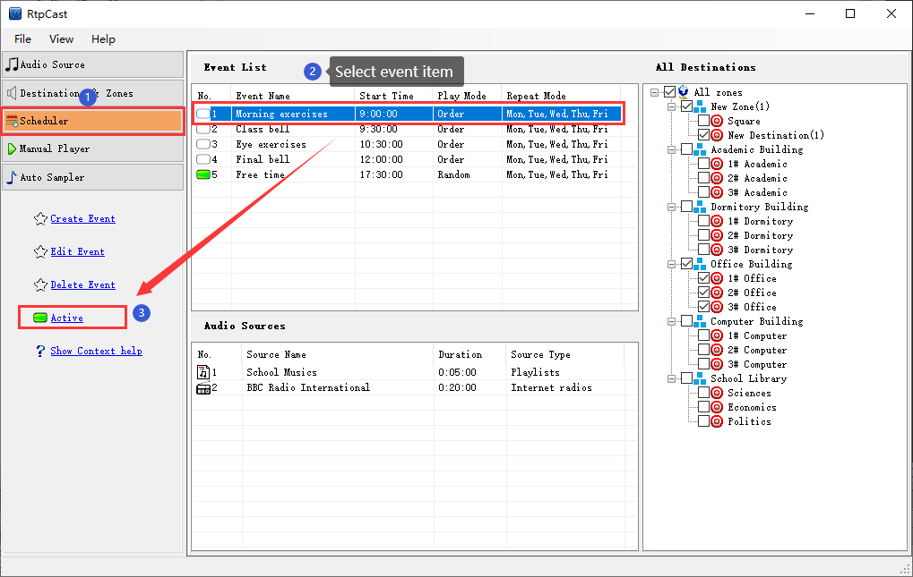

|  |
|
Introduction |
|
Activate or inactive event. When the event is in the active state, the system schedules the event according to the parameters of the configured event. Otherwise, the event is is invalid. |
|
Operation |
(1)
Active event: You select the inactive event in the event list (i.g.the icon on the left is a blank rectangular box "
 "), and then click the [Active]. At this time, the icon on the left changes to a green rectangular box " "), and then click the [Active]. At this time, the icon on the left changes to a green rectangular box "
 ", indicating that the event has been activated. ", indicating that the event has been activated.
|
|
(2)
Inactive event: You select the active event in the event list (i.g.the icon on the left is a green rectangular box "
"), and then click the [Inactive]. At this time, the icon on the left changes to blank rectangular box "
", indicating that the event has been inactivated.
|